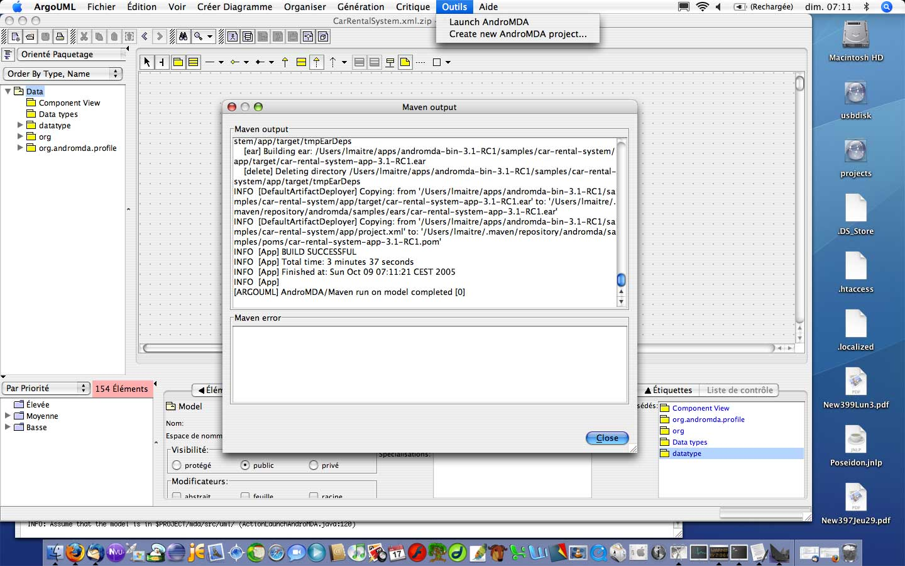

This functionnality help you create a new AndroMDA project from inside ArgoUML. To use it, select the menu tool and then the menu item Create new Project.
When you click on the Create new project item a dialog appear on the screen.
Use the buttons Next and Previous to navigate among the screens of the dialog.
Use the button Finish in the last screen of the dialog to validate your choices and launch Maven.
The first screen of the dialog allow toe set general properties of the project:
The second screen of the dialog allow to set properties of the project:
The third screen of the dialog allow to set general properties of the project:
The fourth screen of the dialog allow to choose the folder where will be generated the project:
To launch the creation of the project by Maven, click on the Finish button.
After having clicked on the Finish button, a window presenting the output of the Maven process appear.
This functionnality launch Maven on the current model. To use it, save your project in XMI and select the menu Tool and then the menu item Launch Maven.
When you click on the Create new project item a dialog appear on the screen.

Use the buttons Close to hide the Maven output. Artifacts for the project are now generated and you can see them in subfolders of the project root.